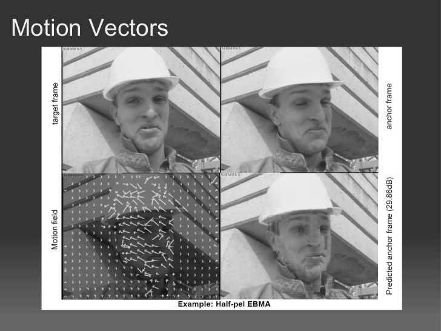
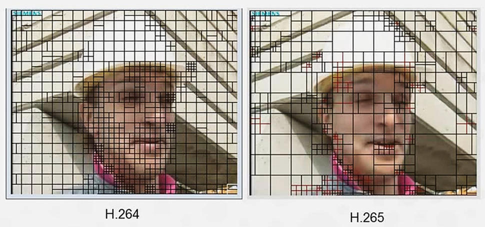

 h-264 in cuda presentation
 cnet.com
Motion Compensated Prediction $16\times16 \rightarrow 64\times64$.
Predição de blocos de tamanhos distintos, tendo blocos de tamanho residual até $32\times32$.
Motion Vector $9 \rightarrow 35$ intra-picture directions.
Adaptive Motion Vector Prediction (data do bloco e seus vizinhos).
Sample Adaptive Offset (reduz artefatos nas bordas dos blocos).